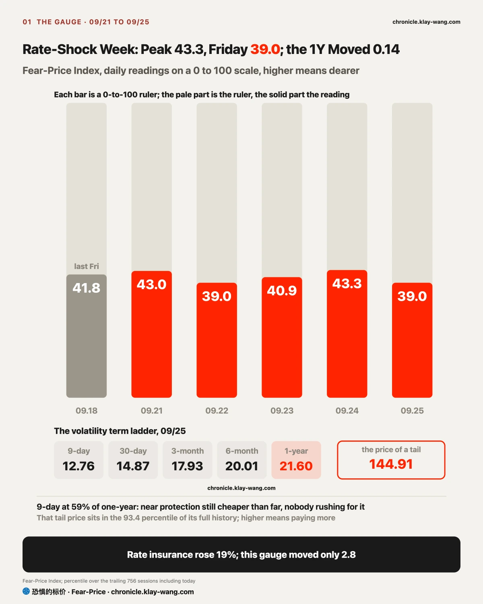
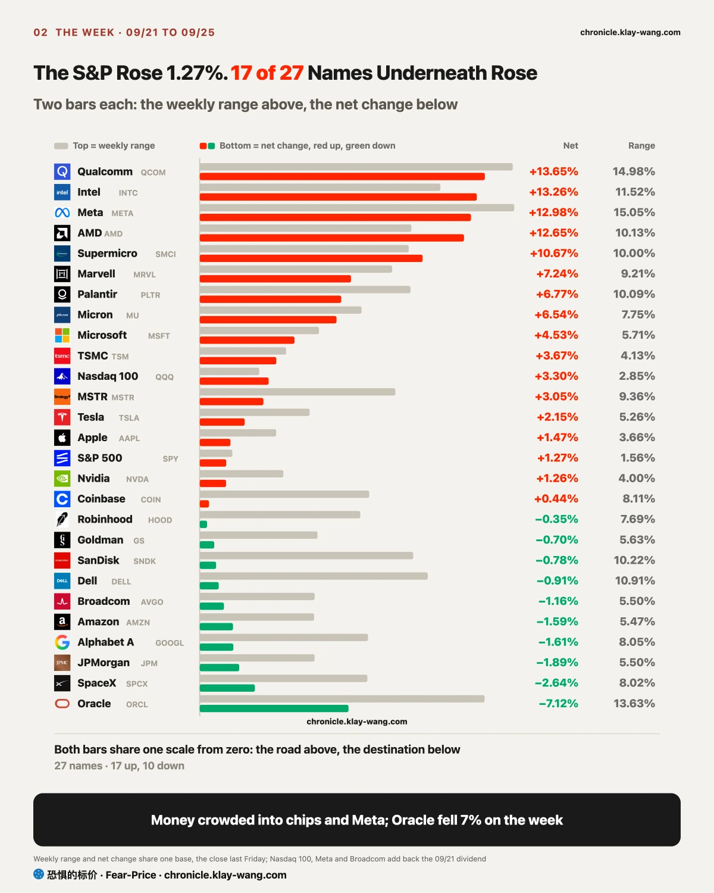
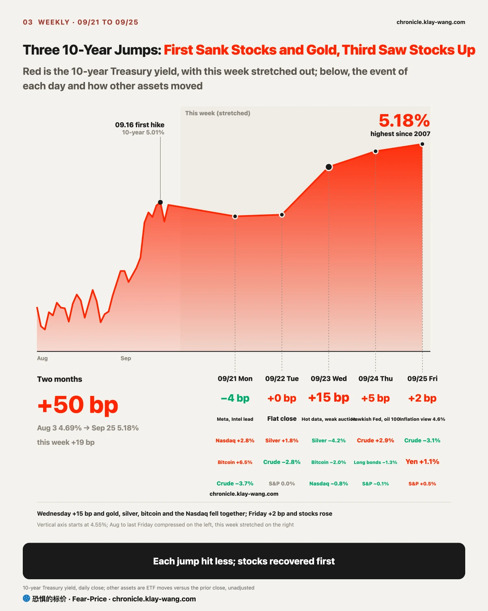
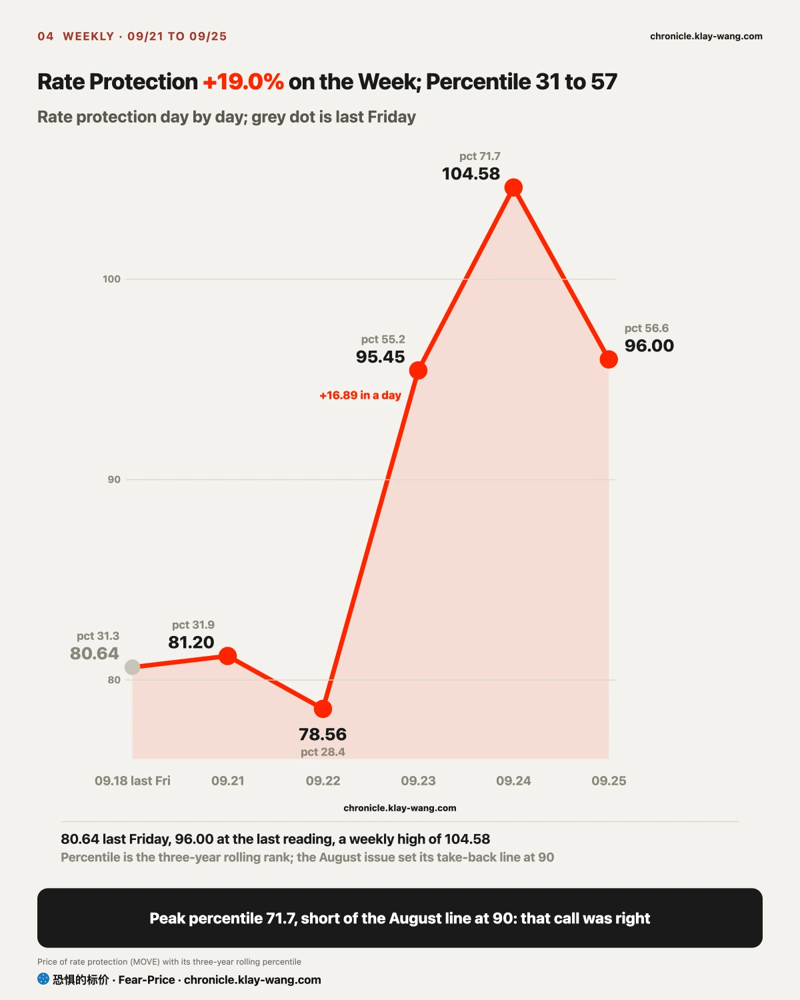
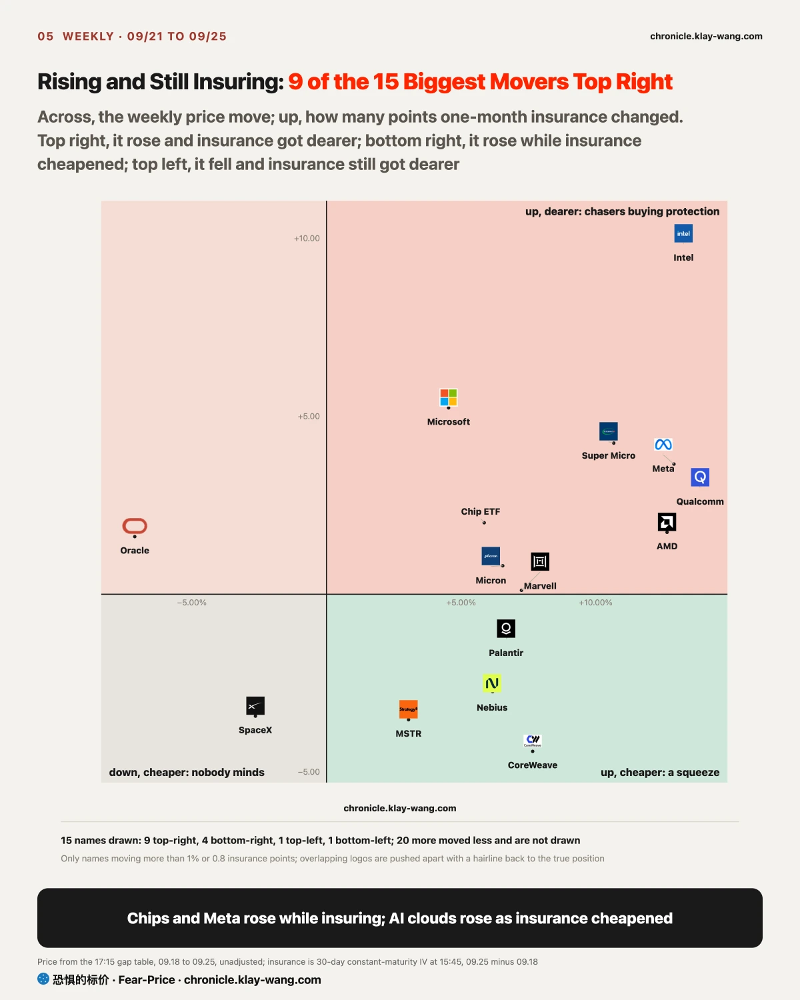
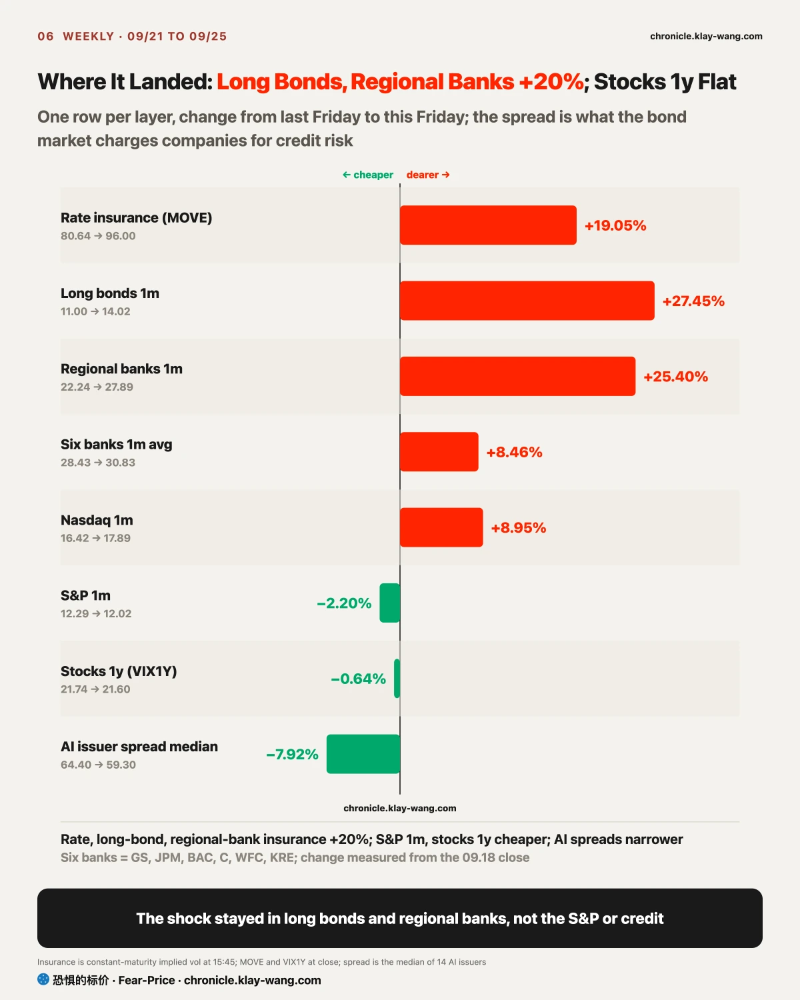
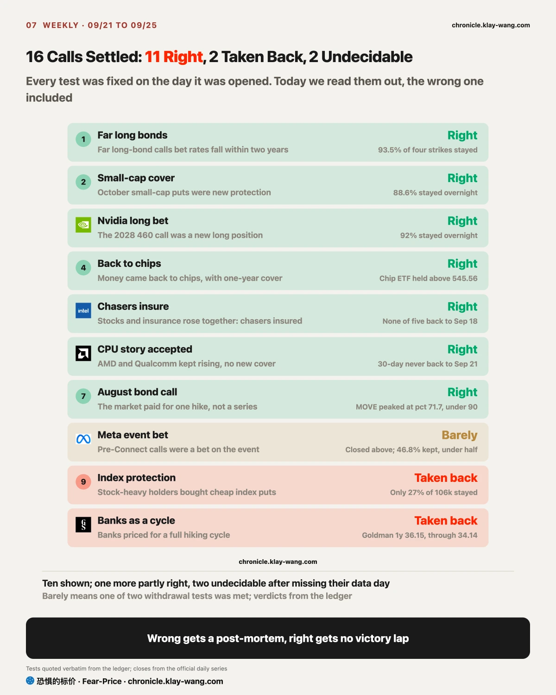

Fear-Price Index · Sep 25, 2026 · reading 39.0/100: one-year volatility VIX1Y at 21.60, in the 39.0th percentile of the past three years, where high means expensive. Daily ledger and definitions at chronicle.klay-wang.com · Please credit: Fear-Price Index
Last Friday 41.8, Thursday a high of 43.3, this Friday 39.0. VIX1Y went from 21.74 to 21.60 on the week, a move of 0.14. In the week the 10-year hit a 19-year high, the price of a year of stock protection did not rise at all; the stock market did not treat this rise in rates as a year-long risk. The K index is 2.488, above 2.055 last Friday. The closer it gets to 1, the more people back their worry by buying protection. Fear and Greed rose from 30.4 to 37 on the week and still leans toward fear, while the price of a month of stock protection barely moved: people sound gloomy and are not paying for it. At the Fear and Greed reading of today, VIX would need to rise above 37 for K to fall below 1. History at chronicle.klay-wang.com/kindex, the index itself at chronicle.klay-wang.com/fear-price.

The S&P rose 1.27% on the week while the equal-weight S&P fell 0.6%: the average stock fell, and the index rose on a few big names alone. By a Bank of America count, the Magnificent Seven plus Broadcom, AMD and Micron now make up about 41% of the US market, close to the peaks of 1973, 1989 and 2000. What matters more is that the names holding the index up are the big stocks whose insurance is getting dearer, while one-month insurance on the S&P itself got 2% cheaper. The index looks calm because a dozen names carry its swings; if rates spike again and those names give back, nothing else in the index is there to catch it.
The biggest losers were utilities, energy, real estate and financials. Energy followed oil; the other three fear rates: utilities and real estate attract buyers with dividends, which look worse than Treasuries when rates rise, and the long-dated bonds banks hold lose value. The most telling number is gold: if the market feared inflation, gold would usually rise, yet this week it fell with long bonds and silver while the dollar rose. What mainly rose this week was the cost of borrowing after inflation, and assets that pay no interest or take long to pay back gave way to cash. If you hold high-dividend stocks or real estate trusts, that pressure will not ease until the 10-year comes down.

The 10-year went from 5.00% to 5.18%, with a different push each day. Wednesday was the real rate: hot manufacturing data and a weak five-year auction lifted the 10-year 15 basis points in a day, about 80% of it from the real rate, the yield after inflation, while inflation expectations barely moved. Thursday was a hawkish speech, oil and Japanese bonds: the New York Fed president called another hike this year reasonable, Brent held above 100 dollars and the Japanese 10-year hit its highest since 1996. Friday switched to household inflation expectations: the final University of Michigan September survey put expected inflation over the next year at 4.6%, the highest since June. Each jump hit less: on Wednesday stocks, gold, silver and bitcoin fell together, on Thursday long bonds fell 1.3% while stocks and gold only slipped, and by Friday stocks closed higher. By Friday the push had moved to household inflation expectations, the harder kind to reverse: once households expect higher prices, they ask for raises and buy early, and that takes months to fade.
Rate insurance made a round trip with it. MOVE was 78.56 on Tuesday, 95.45 on Wednesday, 104.58 on Thursday and back to 96.00 on Friday, 19% dearer on the week. On Friday rates rose only 2 basis points, and the market stopped paying extra for another big jump. Hike bets rose with it: pricing of an October hike went from under half to about 70% in a week, and rate swaps fully price 75 basis points of hikes over the next year. The withdrawal line set in the August monthly issue was the 90th percentile of the past three years; the highest this week was the 71.7th, so that call was right.

When stocks rise, their insurance usually gets cheaper. This week 9 of the 15 biggest movers rose while their insurance got dearer, from Microsoft at 4.5% to Qualcomm at 13.7%: option buyers are paying for bigger swings, both those betting on more upside and those guarding against a drop, so chasing here and then protecting the position is no longer cheap. Intel is the extreme case: up 13% on the week, with next-month insurance priced above its one-year every day since Monday, the only tech name on that list. A screenshot circulating online claims about 2 billion dollars of dark-pool blocks after the close on September 18 and calls 108 a support level; those trades all printed after hours at the closing price, on a day that combined quarterly expiry and the quarterly index rebalance, and FINRA data show regular-hours off-exchange volume that day at about nine tenths of its two-month average. Nothing there says anyone was accumulating at 108, and the next session Intel gapped up 7% and never came back to 108. Oracle went the other way: down 7% on the week while the options and credit markets both raised its price, with one-month insurance dearer and its credit spread about 18 basis points wider, the most of the 14 AI borrowers; Morgan Stanley argues its force majeure notice on a data centre puts contract risk back on AI build-outs financed with debt. To follow Intel insurance and big trades day by day, go to chronicle.klay-wang.com/t/INTC.

Rate insurance rose 19%, one-month insurance on long bonds 27% and on regional banks 25%. One-month Nasdaq insurance rose 9% too, but one-month S&P insurance got 2% cheaper, and a year of stock protection barely moved. The median credit spread across 14 AI-related borrowers narrowed from 64.4 to 59.3 basis points; Oracle and Nvidia widened most, by about 18 and 16.
A credit spread is the extra interest a company bond pays over a Treasury of the same maturity, the price the bond market puts on whether that company can pay. With rates at a 19-year high that price got cheaper: the bond market is worried about rates themselves, not yet about companies failing to pay.
Banks were the exception, and in a particular shape. Last Friday only 3 names had one-month insurance priced above their one-year, all of them banks; this Friday there were 9, with all five big banks we track and the regional bank fund among them, plus long bonds, Intel and health care. Short-term protection costing more than long-term means buyers are worried about the next few weeks. Regional banks hold a lot of long-dated bonds, and when rates rise those bonds lose value, which is the road Silicon Valley Bank went down in 2023.
My read is that the shock will land on regional banks first, with tech and company credit later. If regional bank one-month insurance falls back below its one-year before October 2, or the median AI borrower spread rises above 73.6 basis points before September 30, the read has to change: the first would mean the worry about banks has faded, the second that the shock has reached companies. A Bank of America strategist watches for two lines breaking together: MOVE above 125 and a global financials index below 125. MOVE peaked at 104.58 this week and was 96 on Friday, about 30% short of 125; both lines have to break together, and the first is still far off.

If you hold an S&P 500 or Nasdaq-100 ETF: 10000 dollars in the S&P 500 ETF made about 127 dollars this week and in the Nasdaq-100 ETF about 319, while the same money in the equal-weight S&P lost about 56. The S&P ETF closed at 771.35 on Friday, with its biggest put wall below at 760 and its call wall above at 785. To keep tracking those walls, go to chronicle.klay-wang.com/t/SPY.
If you hold AI and chip stocks: the chip fund rose 5.9% on the week, about 586 dollars on 10000. The Nvidia call that pays if the stock doubles by 2028 still had 92% in place the next morning, a real position; long-term money was not scared off by rates. Friday started a split: Dell and Super Micro, which sell the equipment, found buyers during the day, while CoreWeave, Nebius and Oracle, which rent out computing power, fell on thin volume. To follow Nvidia big trades and insurance day by day, go to chronicle.klay-wang.com/t/NVDA.
If you hold Micron or SanDisk: Micron rose 6.5% on the week and reports on September 30; its one-month insurance sits at the cheap end of its own past year (23 out of 100), so protection before results is not expensive. SanDisk insurance ranks fifth on our whole list in absolute terms, yet against its own year it sits almost at the cheapest point (5 out of 100). We wrote two calls on memory stocks on September 22 and 23; they settle on September 30 and October 1, right or wrong, in public. To see Micron walls, insurance and the calls we have logged on it, go to chronicle.klay-wang.com/t/MU.
If you hold bank stocks: for the five big banks we track and the regional bank fund, one-month protection costs more than one-year this week, and regional bank insurance is up a quarter. The share prices fell only modestly: four fell less than 2% on the week, Citigroup rose 1.9%, and only Wells Fargo fell 3.7%; the worry shows up mainly in the price of protection.
If you hold long bonds or bond funds: down 2.4% on the week, but insurance started getting cheaper on Friday. Far-dated money is betting rates come back within a year or two; that is a bet on where it ends, and the bumps on the way are still there.
The strongest of the right calls are three overnight retentions: the far-dated long-bond calls kept 93.5%, the October small-cap puts 88.6% and the Nvidia 2028 call 92%. The big trades were new positions, not day trades. The August monthly call was right too.
Two were taken back. One was the index protection from September 21: of 106k puts only 27% stayed, money in and out within the day. The other was the call from last week that banks were being priced for a full hiking cycle: Goldman one-year insurance fell through its own withdrawal line. The Meta event bet barely stands: the stock closed above the line, and 46.8% of the contracts stayed, just short of half. One more call was partly right, and two missed their data day and cannot be judged, recorded as they are.